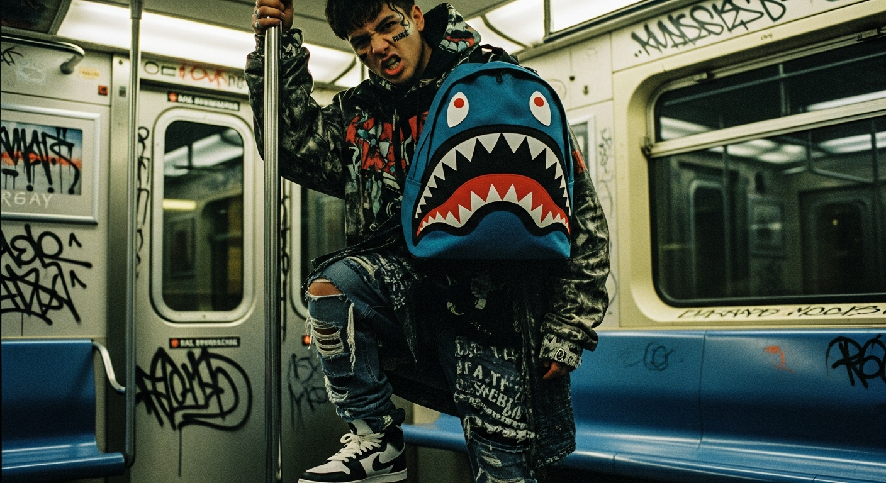

HISTORIA
DROPYARD nació en Gazcue, Santo Domingo, con tres mochilas SPRAYGROUND® traídas en una maleta y muchas ganas de mover el street en RD.

2018
SANTO
DOMINGO.
EL ORIGEN
En 2018 trajimos a la República Dominicana las primeras unidades de SPRAYGROUND® antes de que la marca tuviera presencia en el Caribe. Lo que empezó como un proyecto para coleccionistas locales se convirtió en una tienda con clientes en todas las provincias del país.
DISTRIBUIDOR AUTORIZADO
Desde 2021 somos distribuidor autorizado oficial de SPRAYGROUND® para el Caribe. Recibimos cada drop al mismo tiempo que las tiendas de Nueva York. Cada mochila viaja directa desde el almacén oficial hasta nuestro warehouse en Santo Domingo.
COMUNIDAD
DROPYARD no es solo una tienda: es la comunidad street más grande de RD. Hacemos drops privados en Santiago, Punta Cana y la Capital, y colaboramos con artistas, raperos y deportistas dominicanos.